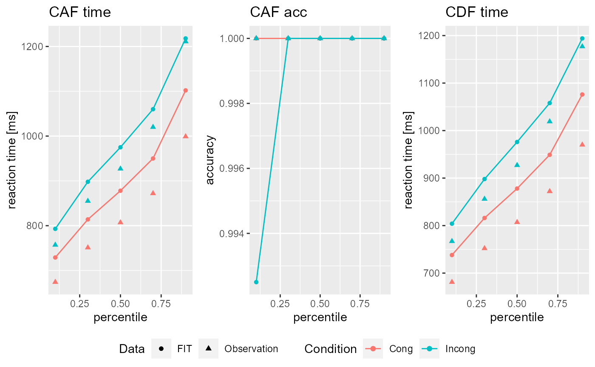

vignettes/Tutorials/Fitting_models.Rmd
Fitting_models.RmdIn order to fit something with DDModeling you need at least your model definition in form of a DDModel object (see here for a tutorial) and some data in form of a DDRep object (see here for a tutorial on data import or here for one on data simulation). With this you can perform a rather simple SIMPLEX downhill optimization. However DDModeling enables you to use a wide spectrum of additional feautures! In the following most of these will be introduced starting from the least complex all the way to deep learning aided fitting.
All the following examples will use the same DDModel and DDRep:
Let us start with a Random SIMPLEX routine! A SIMPLEX is a rather common and established downhil algorithm. The adjective random specifies that the algorithm will be initialized (i.e. it’s starting values) by random.
All of the following examples will use the Fit_DDModel() function which you will see over the course of this tutorial, is a highly overloaded and flexible function! For the task at hand it needs just five arguments: model, data, s_sampling, trials and simplex_struc. While the first two should be intuitive, referencing the DDModel and to be fitted data respectively, the latter three need further explanation. s_sampling takes a logical specifying if you want to use super sampling while fitting. Exisiting research will choose s_sampling = FALSE in most if not all cases, however I could identify (in yet unpublished research) that it may proof beneficial! With s_sampling = FALSE the SIMPLEX will simulate with the specified number of trials for each calculation. If you choose s_sampling = TRUE the function will determine the number of trials per condition present in your data (let us call it t_data) and instruct the SIMPLEX to simulate trials/t_data times with t_data. The best resulting fit of these samples will be used for the downhill algorithm. You will likely have noticed that depending on s_sampling the function of trials changes, however the general computational cost of trials stays constant. Finally simplex_struc takes a numeric vector as an argument which portrays a structure of successive SIMPLEXes. simplex_struc = c(1) for example will initialize one SIMPLEX, simplex_struc = c(2) two and so on. simplex_struc = c(10,1) will initialize 10 SIMPLEXes and after that one more with the best parameters resulting from the 10 before it. Likewise simplex_struc = c(10,2) will initialize two more SIMPLEXes with the two best results of the 10 preceding ones. Note that you may only use natural numbers in an descending order! simplex_struc = c(1,10) for example will lead to an error because there are no 10 results in the second iteration.
With all this said and done, let us fit some!
Fit_rand_1 <- Fit_DDModel(model = DSTP, data = DATA, s_sampling = FALSE, trials = 2000, simplex_struc = c(1))
#> Warning:
#> Fit_DDModel(model = DSTP, data = DATA, s_sampling = FALSE, trials = 2000,
#> simplex_struc = c(1))
#> 1: 'grid_path' or 'DL_model' is missing!
#> Startvalues will determined using a uniform random distribution!
Fit_rand_2 <- Fit_DDModel(model = DSTP, data = DATA, s_sampling = FALSE, trials = 2000, simplex_struc = c(10))
#> Warning:
#> Fit_DDModel(model = DSTP, data = DATA, s_sampling = FALSE, trials = 2000,
#> simplex_struc = c(10))
#> 1: 'grid_path' or 'DL_model' is missing!
#> Startvalues will determined using a uniform random distribution!
Fit_rand_3 <- Fit_DDModel(model = DSTP, data = DATA, s_sampling = FALSE, trials = 2000, simplex_struc = c(10,2))
#> Warning:
#> Fit_DDModel(model = DSTP, data = DATA, s_sampling = FALSE, trials = 2000,
#> simplex_struc = c(10, 2))
#> 1: 'grid_path' or 'DL_model' is missing!
#> Startvalues will determined using a uniform random distribution!
Fit_rand_4 <- Fit_DDModel(model = DSTP, data = DATA, s_sampling = FALSE, trials = 2000, simplex_struc = c(10,2,1))
#> Warning:
#> Fit_DDModel(model = DSTP, data = DATA, s_sampling = FALSE, trials = 2000,
#> simplex_struc = c(10, 2, 1))
#> 1: 'grid_path' or 'DL_model' is missing!
#> Startvalues will determined using a uniform random distribution!Fit_DDModel() will return a DDFit object that can be called by name or inspected using the summary() or plot() functions.
summary(Fit_rand_1)
#> $INPUT_Par
#> Ter a c mu_t mu_f mu_RS2 mu_SS
#> 1 0.2050017 0.1840013 0.1840013 0.06833389 0.08666778 0.3050017 0.5466711
#>
#> $FIT_Par
#> Ter a c mu_t mu_f mu_RS2 mu_SS
#> 1 0.2161615 0.1891664 0.1970224 0.0768165 0.09746035 0.3324906 0.6118319
#>
#> $Eta
#> Ter a c mu_t mu_f mu_RS2 mu_SS
#> 1 0.03719934 0.02152094 0.05425433 0.08482611 0.05396283 0.09162972 0.08145091
#>
#> $mean_Eta
#> [1] 0.06069203
#>
#> $Fit
#> [1] 0.01156533
plot(Fit_rand_1)
#> Fit: 0.01156533
Fit_rand_1@FIT@FIT_V
#> [1] 0.01156533
Fit_rand_2@FIT@FIT_V
#> [1] 0.001776562
Fit_rand_3@FIT@FIT_V
#> [1] 0.001617809
Fit_rand_4@FIT@FIT_V
#> [1] 0.00599318Note how the fit gets better the more sophisticated the SIMPLEX structure gets! However DDModeling does not stop here, let us take a look at more complex solutions for the starting values!
The GRID SIMPLEX is analogue to the Random SIMPLEX only that the SIMPLEX will be initialized based upon a allready calculated GRID (see here for a tutorial). The GRID simply needs to be specified under the grid_path argument.
Grid_DSTP <- Generate_GRID(model = DSTP, path = getwd(), name = "DSTP_Flanker", eval_pts = rep(2,ncol(DSTP@DM)))
Fit_grid_1 <- Fit_DDModel(model = DSTP, data = DATA, grid_path = Grid_DSTP, s_sampling = FALSE, trials = 2000, simplex_struc = c(1))
Fit_grid_2 <- Fit_DDModel(model = DSTP, data = DATA, grid_path = Grid_DSTP, s_sampling = FALSE, trials = 2000, simplex_struc = c(10))
Fit_grid_3 <- Fit_DDModel(model = DSTP, data = DATA, grid_path = Grid_DSTP, s_sampling = FALSE, trials = 2000, simplex_struc = c(10,2))
Fit_grid_4 <- Fit_DDModel(model = DSTP, data = DATA, grid_path = Grid_DSTP, s_sampling = FALSE, trials = 2000, simplex_struc = c(10,2,1))Of course you do not need to use an additionl SIMPLEX after the GRID search! Simply set simplex_struc = c(0)!
Finally you can use a predefined deep learning model (see here) to initialize your SIMPLEX by simply referencing it under the DL_model argument!
library(keras)
LEARN_DATA <- Import_GRID(grid_path = Grid_DSTP,to = "keras_data")
model <- keras_model_sequential() %>%
layer_dense(input_shape=ncol(LEARN_DATA$INPUT),units = 10, activation = "relu") %>%
layer_batch_normalization() %>%
layer_dropout(rate = 0.1) %>%
layer_dense(units = 20, activation = "relu") %>%
layer_batch_normalization() %>%
layer_dropout(rate = 0.2) %>%
layer_dense(units = ncol(LEARN_DATA$OUTPUT),activation = "linear")
model %>% compile(
loss = "mean_squared_error",
optimizer = "adam",
metrics = list("mae","mape")
)
model %>% fit(
x = LEARN_DATA$INPUT, y = LEARN_DATA$OUTPUT,
epochs = 50,
batch_size = 16,
verbose = 1,
validation_split = 0.1,
shuffle = TRUE,
callbacks = list(
callback_reduce_lr_on_plateau(factor = 0.05)
)
)
Fit_DL <- Fit_DDModel(model = DSTP, data = DATA, DL_model = model, s_sampling = FALSE, trials = 2000, simplex_struc = c(1))